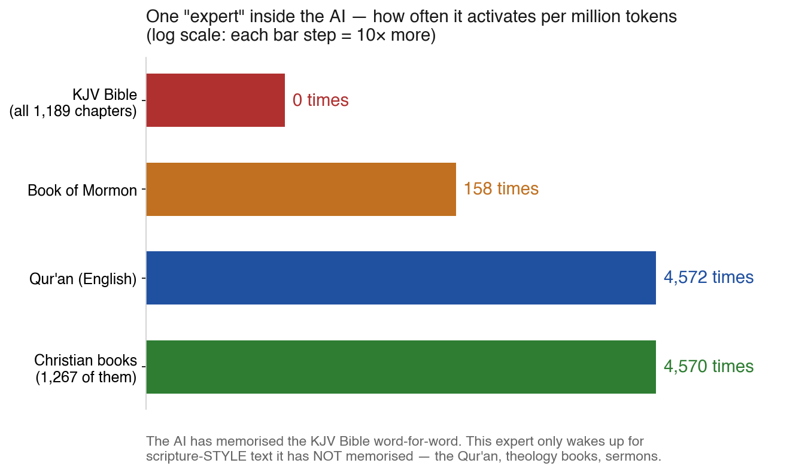
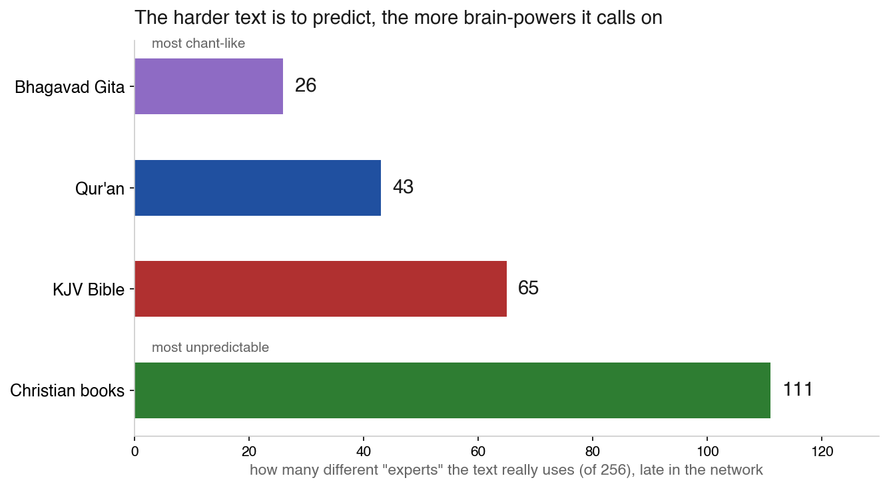

Modern AI models are mixture-of-experts machines: inside every layer sit 256 small specialist networks, and for every single word it reads, the model picks 6 of them to do the thinking. Nobody fully understands how it chooses. So we did something simple and obsessive: we let DeepSeek-V4-Flash read scripture all day — the entire King James Bible, the Qur'an, the Bhagavad Gita, the Tao Te Ching, the Book of Mormon, and 1,267 books of Christian writing spanning 2,000 years — and we wrote down every choice it made. 43 layers × 256 experts × 22 million tokens. Then we looked for patterns, and then — this is the part that matters — we asked two external AI reviewers to tear the whole analysis apart.
A cluster of specialists in the final layer of the network (layer 42) behaves in a way nobody expected. They are gated, near-perfectly, by something absurdly simple: whether the text contains numerals. Trace their firing rate against digit density and it's monotone across four orders of magnitude — 0 per million tokens on digit-free text, up to 16,000/M on digit-dense text. Within a single corpus, holding everything else fixed.

Our first headline was beautiful: one expert (#164) fired exactly zero times across the entire KJV Bible — a million tokens — while firing constantly on the Qur'an and Christian doctrine. We called it the "not-memorized-scripture expert": proof the model recites the Bible from memory but has to compute everything that merely sounds like it. Then Claude Opus 5 re-derived every number from our raw data and found what we'd missed: our own corpus preparation strips verse numbers from the Bible text. The KJV samples are literally 0.0000% digits. The Qur'an translation and the theology books are full of footnotes, citations, page references. The "memorization gradient" was a digit gradient.
A theologian would expect related traditions to share machinery: Bible close to Christian doctrine, both close to the Book of Mormon. The router disagrees. Bible↔doctrine is the pairing with less overlap than Bible↔Tao. The Upanishads — Hindu philosophy, different continent, different millennium — overlap Christian literature more than the Bible does. Nothing in the pairwise routing structure tracks doctrine, tradition, or family tree.
How many of its 256 specialists does a text really use? Corrected for pooling artifacts, a clean signal survives at the deep layers: the Bhagavad Gita — essentially one long chant — runs on ~24. The Qur'an needs ~40, the Bible ~54. The more repetitive and predictable the text, the narrower the palette of experts the router recruits.

Two things. About the model: late-layer routing keeps one eye on the surface of the page; religious tradition per se barely registers in the wiring; predictability shapes how broadly the router recruits. And about method: when your corpora differ in digit density, footnote density, translation status and window length all at once, an external audit that decodes the actual tokens is worth more than any amount of clean bookkeeping. The measurement rig never lied. The story we told about it did.
Everything is public: the full technical wiki with the complete correction log (§9) and both external reviews · the observation code · all 80 J-lens probe samples · raw records in the dataset 0xSero/deepseek-v4-flash-reap (private, access on request) · read the research wiki →